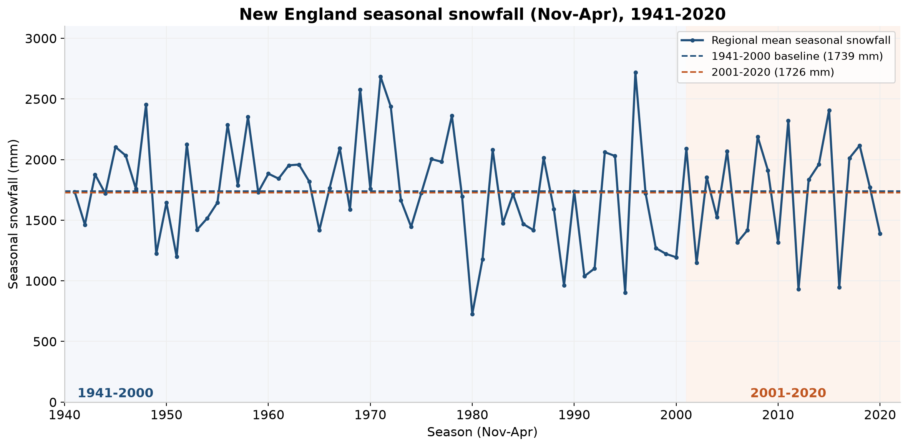
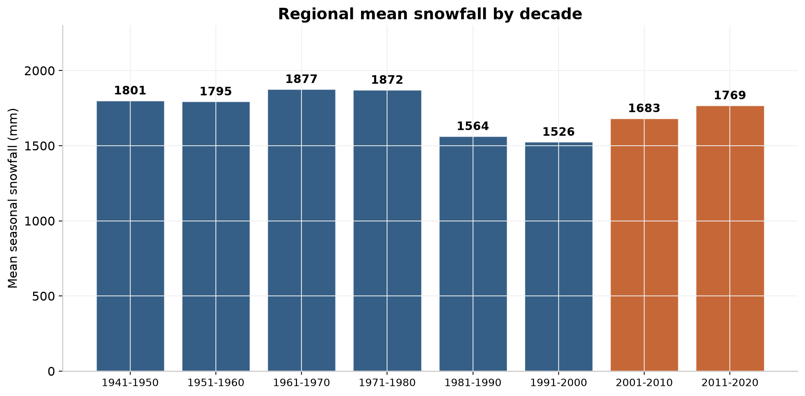
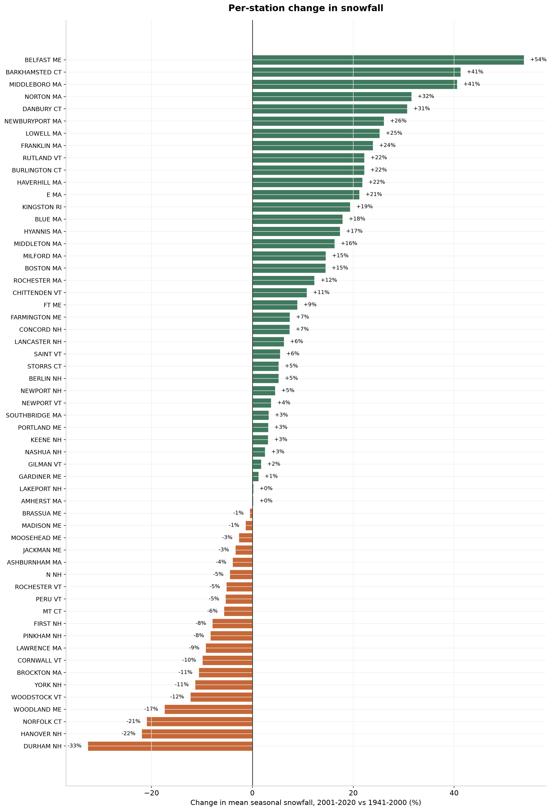
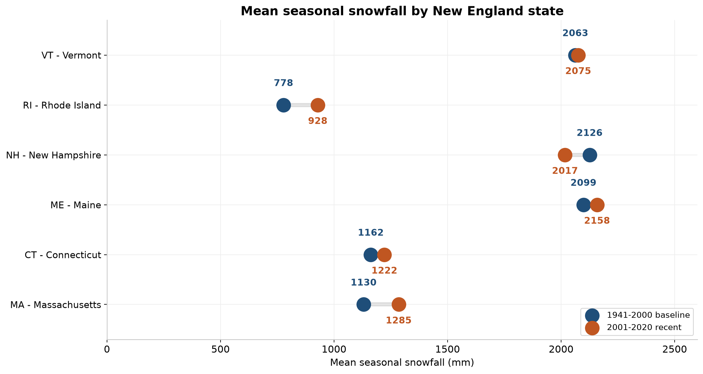

Was the complained-about decline real? Seasonal snowfall in New England, 1941–2020, from the Global Historical Climatology Network (GHCN-Daily).
An uncle born in 1939 and died in 2024 complained, several times, that there was less snow nowadays than there used to be. He lived in New England for most of his life, so this report asks: Did seasonal snowfall in New England decline in the first two decades of the 21st century (2001–2020) compared to the last six decades of the 20th century (1941–2000)?
The data answer is no. Snowfall in the first two decades of the 21st century was slightly higher than in 1941–2000 on average — an increase of about 2–3%, or roughly 45 mm over the ~1,670 mm baseline, which is not statistically detectable above the noise. The 1980s and 90s were noticeably drier than the 1940s–70s, but the 21st century has been flat to slightly higher again.
The complaint is not without a kernel of truth. Snowfall in New England was remarkably consistent in the 1940s–70s (about 1,800 mm per season) and then dipped into a lean 1980s–90s (~1,540 mm) before rebounding in the 2000s–2010s. An uncle watching a decade or two feels like it, especially if his memory is dominated by the deep winters of the 1950s–70s. But the numbers do not support a durable decline: the first two decades of the 21st century average the same, or slightly more, snow.
In the data, the first two decades of the 21st century look like this compared with the 1940s–1990s. Blue bars = 1941–2000 Orange bars = 2001–2020


Equal-weight per-station average over the 57 stations with at least 10 seasons in each period:
| Metric | 1941–2000 baseline | 2001–2020 recent | Change |
|---|---|---|---|
| Mean seasonal snowfall (wetted seasons) | 1,672 mm | 1,717 mm | +2.7% |
| Regional per-season mean | 1,739 mm | 1,726 mm | −0.7% |
| Median across stations | 1,606 mm | 1,710 mm | +6.5% |
| Snow days per season | 27.4 | 28.5 | +3.8% |
Snowy winters are feast or famine Season-to-season variation is huge (the 1980 season was ~727 mm; 1996 was ~2,719 mm), so a two-decade average is not the whole story — but it is the fairest comparison for this question.
Some stations did get noticeably less snowy — most strongly Durham, NH (−33%), Hanover, NH (−22%) and Norfolk 2 SW, CT (−21%). Others gained dramatically, e.g. Belfast, ME (+54%), Middleboro, MA and Barkhamsted, CT (both +41%). The median station gain is positive; 37 stations show gains, 20 show losses.

Rhode Island is represented by a single long-record station (Kingston), so treat its +19% with caution.

| State | Stations | Baseline | Recent | Change |
|---|---|---|---|---|
| Massachusetts | 18 | 1,130 mm | 1,285 mm | +13.7% |
| Connecticut | 6 | 1,162 mm | 1,222 mm | +5.2% |
| Maine | 10 | 2,098 mm | 2,158 mm | +2.9% |
| New Hampshire | 13 | 2,126 mm | 2,017 mm | −5.1% |
| Rhode Island | 1 | 778 mm | 928 mm | +19.4% |
| Vermont | 9 | 2,063 mm | 2,075 mm | +0.6% |
No — the data do not support the uncle's complaint.
Across 57 long-record New England stations, seasonal snowfall in 2001–2020 is, on average, slightly higher than in 1941–2000 — +2.7% equal-weight (median across stations +6.5%), with no statistically significant decline in either period and a net-positive trend over the last 40 years. Snowfall is also not uniform: New Hampshire's stations show a modest decline (−5%), while the southern and eastern coastal stations gained snow.
The most honest reading of his complaint: he is not wrong about his subjective memory — the 1980s and 90s really were noticeably leaner, and his favorite childhood winters were among the heaviest in the record. But the first two decades of the 21st century are not a decline relative to 1941–2000; they track the 1940s–70s. The core of his complaint is not borne out by the data.
Data source: Global Historical Climatology Network — Daily (GHCN-Daily), Version 3.35, NOAA / NCEI, accessed 2026. 57 long-record New England stations (many with 100+ years of snowfall records) are used; seasons are Nov–Apr (the winter season). Scripts in this repository reproduce the analysis and figures from raw GHCN-Daily files:
scripts/download_data.py — fetches station metadata and per-station .dly files (gitignored data directory).scripts/analyze.py — parses .dly files, computes season aggregates, prints the statistics above, and writes the four figures to images/.Package dependencies: pandas, numpy, matplotlib, scipy
Figures and tables are regenerated from the raw .dly files on every run of scripts/analyze.py.